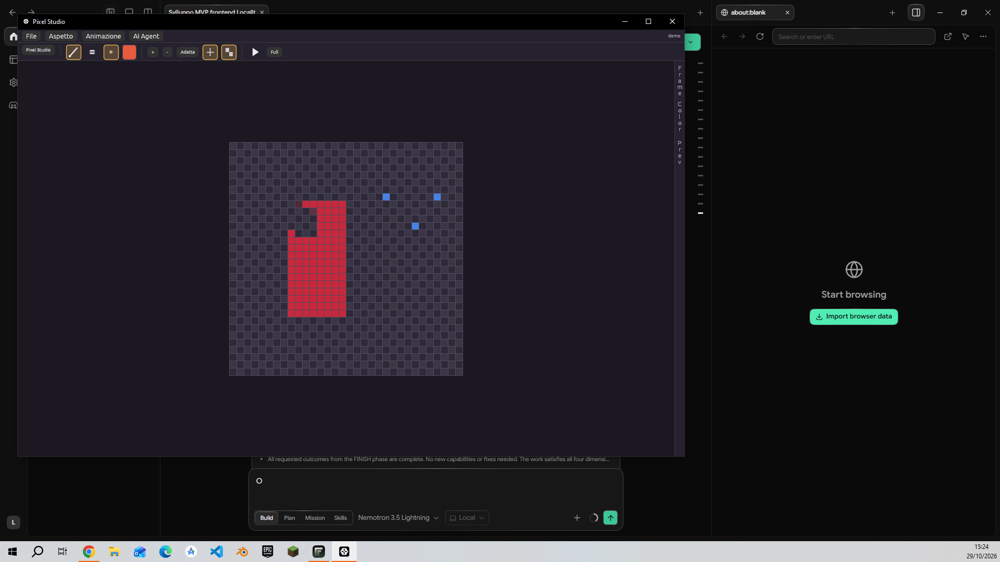
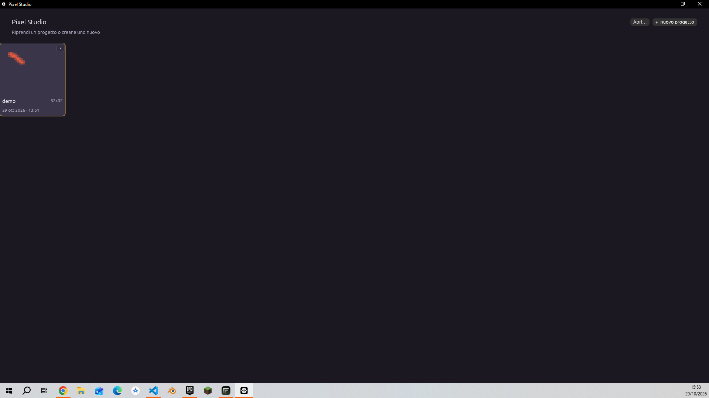
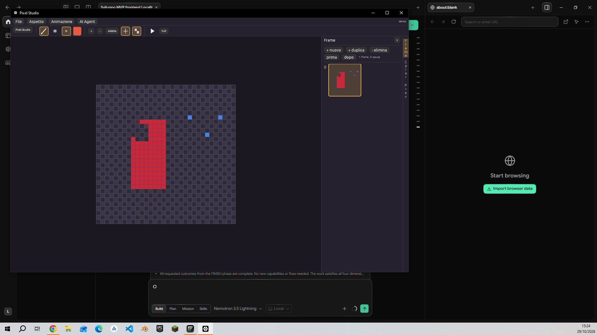
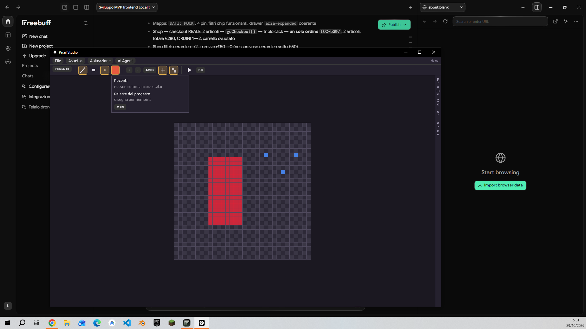
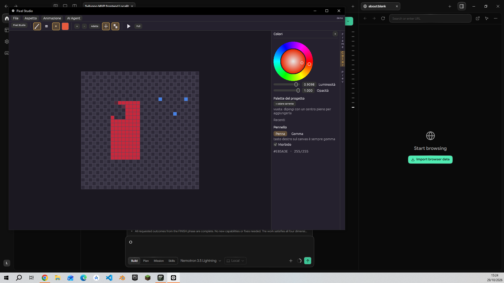
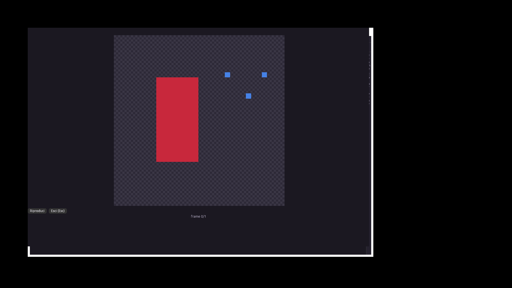
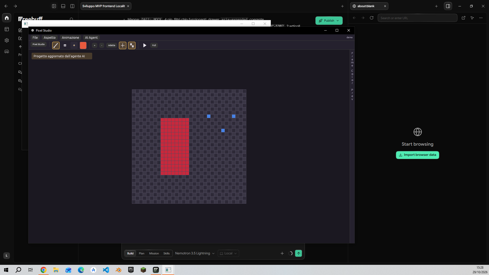

Panoramica di Pixel Studio
Pixel Studio è un editor desktop di pixel-art e tileset multi-frame, con trasparenza totale sul canvas e un server MCP integrato che permette a un agente AI di creare e modificare i progetti in parallelo all'utente, in tempo reale.
Panoramica
L'applicazione è divisa in tre mastri: un motore dati
(pixel-core, progetti su disco), la finestra editor
(pixel-ui) e il server MCP (pixel-mcp).
Il file progetto è la unica fonte di verità: quando
l'agente AI scrive sul file, l'editor lo ricarica da solo; quando l'utente
disegna, l'autosave aggiorna il file che l'agente rileggerà.

Homepage e progetti recenti
All'avvio si apre la Homepage stile suite professionali:
in alto a destra Apri… (file esistente) e + nuovo
progetto (dialogo nome e dimensioni). La griglia di card mostra i
progetti salvati di recente con la loro anteprima reale;
cliccando una card il progetto si apre nell'editor. Il pulsante
× sulla card rimuove solo la voce dai recenti (non cancella
il file).

%APPDATA%\PixelStudio\recents.json su Windows
(~/.pixel-studio/ altrove) ed è limitata a 12 voci.
Dall'editor si torna in homepage con File → Homepage o cliccando il brand Pixel Studio nella nav degli strumenti.
Layout dell'editor
- Barra dei menu (in alto): File, Aspetto, Animazione, AI Agent.
- Nav strumenti: brand (→ homepage), penna, gomma, tratto morbido, selettore rapido del colore, zoom ＋/−, adatta, griglia, scacchiera, comandi frame, play e anteprima a schermo intero.
- Canvas centrale: zoom con Ctrl+rotella e pan con trascinamento del tasto centrale; scacchiera per la trasparenza.
- Dock laterale a tendine: tre schede verticali sul bordo destro — Frame, Colori, Anteprima. Un click richiama la sezione, un secondo click la ripiega; con il pannello chiuso il canvas si allarga a tutta finestra.

Strumenti: penna, gomma, tratto morbido
| Strumento | Come funziona |
|---|---|
| ✏ Penna | Disegna col colore corrente; su un trascinamento veloce il tratto viene interpolato (nessun buco). |
| 🧽 Gomma | Cancella i pixel (li rende trasparenti). Il tasto destro sul canvas è sempre gomma, con qualsiasi strumento attivo. |
| ● Tratto morbido | Disegna con declinazione: il pixel d'impatto riceve il colore pieno, i quattro adiacenti una versione attenuata (70 %) e i diagonali ancora di più (40 %). È un effetto disegno, non una palette: le tinte intermedie generate non finiscono nella palette del progetto. |
Le tinte attenuate sono però reali sulla griglia (canali RGBA attenuati): se l'effetto non serve più, la gomma le rimuove, oppure riparti da una griglia pulita con File → Nuovo….
Selezione dei colori
Il selettore rapido in nav (il quadretto del colore corrente) apre un popup snello e poco invasivo con colori recenti e palette del progetto, senza aprire il pannello completo.

chiudi.Per la scelta completa, la sezione Colori del dock contiene la ruota della tonalità, il disco di saturazione, gli slider di luminosità e opacità, la palette e i recenti.

- Click su un colore della palette → lo diventa corrente.
- Click destro → lo rimuove dalla palette del progetto (i recenti restano).
+ aggiungi colore corrente→ aggiunge alla palette il colore pieno in uso.
Palette del progetto e colori recenti
La palette è una proprietà del progetto, salvata nel file
.pixproj. Vi vengono aggiunti solo i colori espliciti:
il colore scelto quando si inizia un tratto con la penna e i colori
aggiunti a mano dal pannello Colori. Le sfumature generate dal tratto
morbido non inquinano la palette.
I colori recenti (ultimi usati) sono una lista di servizio: si aggiornano mentre si disegna e alimentano anche il popup rapido della nav.
Pannello Frame
La sezione Frame mostra i frame in lista verticale
(uno sotto l'altro, comoda da scorrere e selezionare) con azioni rapide in
testa: + nuovo, + duplica,
− elimina (sul frame attivo) e i comandi di ordine
prima / dopo per spostare il frame attivo.
Gli stessi comandi (e i movimenti) sono anche nel menu Animazione, per chi preferisce la barra classica.
Anteprima dell'animazione
La sezione Anteprima del dock è il player: ▶ / ⏸,
slider fps (del progetto, modificabile) e il marcatore
frame n/m · in riproduzione. Sfogliando i frame mentre
l'animazione gira, i cambiamenti sono immediati.
Anteprima senza sfondo, a schermo intero
Il pulsante ⤢ Full (in nav e nel menu Animazione) porta
l'animazione in schermo intero senza altro cromo: niente
menu, niente pannelli, solo il player su fondo scuro. Un click o il tasto
Esc o la voce Esci (Esc) esce e riporta
l'editor com'era.

Progetti: il formato .pixproj
Un progetto è un file JSON *.pixproj versione 1 con nome,
dimensioni della griglia, lista di frame (griglia RGBA + durata ms),
indice del frame attivo, fps e palette esplicita.
Il salvataggio è atomico (file temporaneo + rename), per
non corrompere il progetto se l'app o l'agente si interrompono a metà.
Importare immagini (pixellatore)
File → Importa immagine… apre un PNG/JPEG qualsiasi e lo pixella sul frame corrente:
- L'immagine viene adattata alla griglia senza deformarla, centrata con letterboxing (eventuale spazio vuoto resta trasparente).
- Un ciclo a matrice esamina l'area di ogni cella della griglia e ne ricava il colore dominante (ignorando pixel completamente trasparenti).
- Il colore scelto finisce nella cella corrispondente.
È anche il cuore del tool MCP import_image (vedi più sotto): l'agente
può partire da uno sprite esistente invece che da zero.
Esportare PNG e ZIP
- File → Esporta PNG (frame attivo)…: salva il frame corrente come PNG con canale alfa.
- File → Esporta ZIP (tutti i frame)…: archivio con
frame_0000.png …emetadata.jsoncon dimensioni, fps e numero di frame, pronto per i pipeline di gioco.
Server MCP
Pixel Studio incorpora un server MCP su stdio
(pixel-mcp): qualunque client MCP (Claude Desktop, Cursor,
VS Code, CLI) può avviarlo come processo figlio e guidare l'editor con
JSON-RPC 2.0. I tool agiscono sul file progetto: prima
di chiamarli serve quindi un progetto da aprire
(create_project ne crea uno nuovo, o puntare a un file
già esistente).
La sincronizzazione èautomatica in entrambe le direzioni:
- l'agente scrive nel file e lo salva atomicamente;
- l'editor, polling a basso costo, ricarica e ridisegna;
- compare l'avviso
Progetto aggiornato dall'agente AI.

Tool del server MCP
La lista dei 12 tool esposti (server stdio):
| Tool | Descrizione |
|---|---|
create_project | Crea un progetto nuovo (percorso, nome, dimensioni). Se il file esiste già viene sovrascritto. |
get_project | Legge nome, dimensioni, fps, frame attivo e riepilogo dei frame. |
set_pixel | Imposta un pixel RGBA sul frame attivo (o su un frame indicizzato). |
get_pixel | Legge il colore di un pixel. |
fill_rect | Riempie un rettangolo col colore dato (clipping ai bordi). |
set_active_frame | Cambia il frame attivo. |
add_frame | Aggiunge un frame vuoto (o duplica l'attivo). |
remove_frame | Elimina un frame (mai l'ultimo). |
list_frame_info | Statistiche di un frame (pixel non trasparenti, colori in uso). |
import_image | Pixellatore via AI: carica un'immagine dal disco, la adatta alla griglia (con letterbox) e scrive il colore dominante di ogni cella. |
export_png | Esporta il frame attivo (o indicizzato) in PNG. |
export_zip | Esporta tutti i frame in ZIP con metadata.json. |
frame quando l'agente
lavora su uno sprite con più stati.
Flussi d'esempio con l'agente
Da zero a sprite animato
create_project→demo.pixproj32×32.set_pixel/fill_rectper la silhouette sul frame 0.add_frame(duplicando) eset_pixelper la variazione del frame successivo.export_zip→ atlas di frame pronti per il gioco.
Partendo da un'immagine
import_imagecon il percorso dello sprite di partenza → frame 0 pixellato.- Rifinire a mano nell'editor; l'autosave tiene il file aggiornato per l'agente.
Lavorare in parallelo
Con l'editor aperto sullo stesso file, ogni tool call dell'agente si riflette sul canvas in tempo reale (screenshot sopra). Anche il contrario vale: l'utente disegna, l'autosave scrive e l'agente rilegge.
Configurazione client MCP
Nei settings MCP del client, aggiungi un server stdio al binario compilato. Esempio generico in JSON:
{
"mcpServers": {
"pixel-studio": {
"command": "C:\\...\\target\\release\\pixel-mcp.exe",
"args": []
}
}
}
Su Linux/macOS sostituisci command con
/.../target/release/pixel-mcp . Il server comunica solo su stdin/stdout: non ha porte né servizi da aprire. Strumenti di test rapidi: initialize, tools/list e
tools/call via JSON-RPC.
Per sviluppatori: i sorgenti sono in crates/pixel-mcp; i tool
sono metodi Rust nativi su PixelService, richiamabili anche
dai test senza avviare stdio (cfr. cargo test -p pixel-mcp).
Scorciatoie da tastiera
| Combinazione | Azione |
|---|---|
| Ctrl+N | Nuovo progetto (dialogo) |
| Ctrl+O | Apri progetto… |
| Ctrl+S | Salva (e registra nei recenti) |
| Click destro sul canvas | Gomma (istantanea, con ogni strumento) |
| Ctrl + rotella | Zoom sul cursore |
| Trascina col tasto centrale | Pan del canvas |
| Esc | Chiude popup / esci dallo schermo intero |
Risoluzione dei problemi
- L'agente non vede le modifiche → controlla che editor e agente puntino allo stesso percorso assoluto del file; l'autosave scrive entro ~300 ms, il ricaricamento è a polling.
- La palette è piena di sfumature → siccome la palette esplicita non le raccoglie, usa
click destrosugli swatch per ripulire o disegna senza tratto morbido. - La thumbnail in homepage è scura → è il frame attivo al momento del salvataggio: ogni nuovo salvataggio la aggiorna.
- Home non mostra un progetto → la lista dei recenti si ferma a 12 voci: riapri il file e salva per riportarlo in testa.